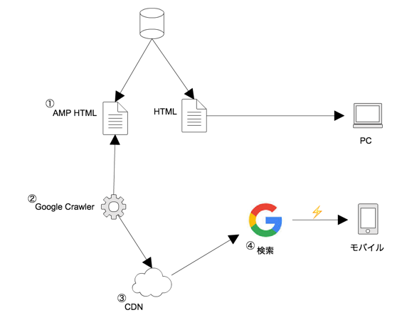
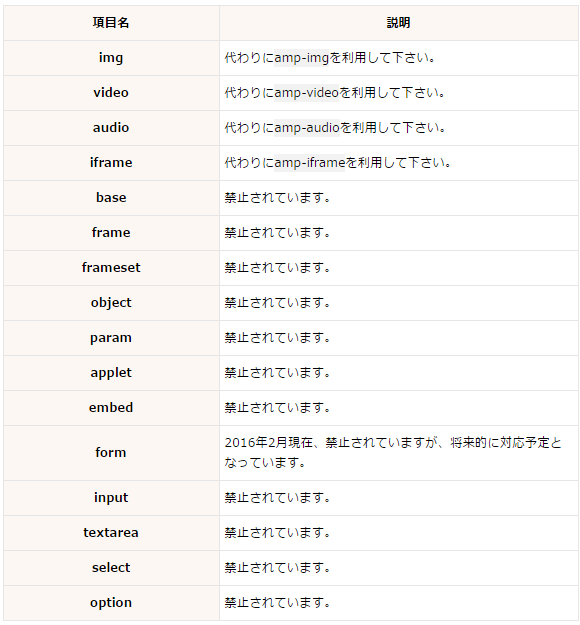
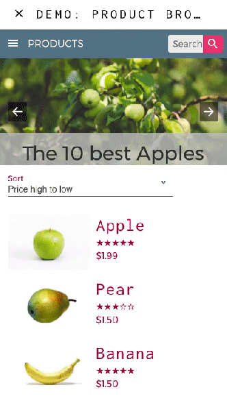

AMP（アンプ）について
- 「Accelerated Mobile Pages」の略 2015に発表し、2016に検索で表示され始めた
- GoogleとTwitterで共同開発されているモバイルでのWebページの表示を高速化する手法、またはそのためのHTMLフレームワークのこと
- 3,100 万のドメインが AMP ドキュメントを発行
- 従来に比べ平均 4 倍の速度で表示
- データ量も約 1/10 に抑えられるため、ほとんどのページが瞬時に表示されます
- AMP ページの滞在時間は2倍
- AMP でコンバージョンが2倍
- いまはモバイルファースト・高速化重要
- wordpressではプラグイン（AMP）があって簡単らしい
- 検索結果の上位表示がされる可能性が高くなる
- スマホの検索結果のカルーセルパネルにサイトが表示される可能性
参考 https://ferret-plus.com/4005
参考 https://liskul.com/amp-12753
参考 http://tech.vasily.jp/entry/amp
仕組み

- Googleにインデックスされると、GoogleはそのAMPページをキャッシュします。
- Googleの検索結果などからAMPページにアクセスすると、すでにGoogleによってキャッシュされたWebページのデータが返される仕組みになっているので、通常のWebページよりも高速に表示できる
デメリット
- AMP では任意の JavaScript の利用が非常に厳しく制限されています。AMP JS以外のJavaScriptの動作を許容しません。
-JavaScriptの使用を制限することで、動画やアニメーションなどが瞬時にロードできるようにするため-
- 外部ファイルのCSSを読み込めない。CSSはすべてAMPページ内に記述する必要があります。
- htmlでできたページとAMPに準拠したページを二重に管理する必要があります。
禁止されているタグ

ニュース記事やブログ記事、レシピなど静的なコンテンツに向いてる
記述方法
<html ⚡>（<html amp> でも可）にする。
記述の仕方 https://www.ampproject.org/ja/docs/getting_started/create/basic_markup
デメリットはあるけど
amp-bindというAMPのコンポーネントでダイナミックな動きができる



2018年 Web Worker を利用することで AMP での JS 実行を可能にかも。現在取り組んでるみたい
https://www.suzukikenichi.com/blog/js-in-amp-with-web-worker/
HTML5で定義されているプロトコル。どんな処理でもマルチスレッド化。new Worker()でWorkerを生成します。
Web Worker とは、Web アプリケーションにおけるスクリプトの処理をメインとは別のスレッドに移し、バックグラウンドでの実行を可能にする仕組みのことです。時間のかかる処理を別のスレッドに移すことが出来るため、UI を担当するメインスレッドの処理を中断・遅延させずに実行できるという利点があります。
参考 http://cly7796.net/wp/javascript/try-using-web-worker/
参考 https://qiita.com/kenju/items/805fd3298a62cea4e98f